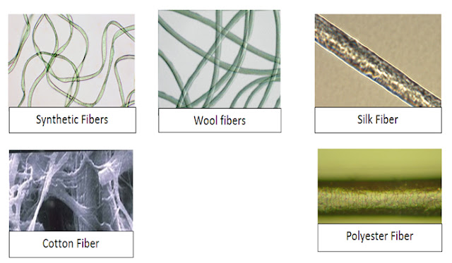

Fibre evidence most often is considered identified because so many types of fabrics exist and because some manufacturers use one fabric to produce many types of items such as clothing, drapery, or furniture. Interestingly, because of this, the likelihood of finding a fabric from two or more manufacturers that has been dyed with exactly the same colour and/or has been printed with exactly the same pattern is extremely rare. Finding dyed natural or man-made fibres on a suspect or victim can be incriminating, but finding common fibres such as white cotton or blue denim is not.

Although fibres are rarely individualized, this does not mean they are not an important type of evidence. Douglas W. Deedrick, Unit Chief of the FBI Trace Evidence Unit, stated, “A fibre found on the clothing of a victim that matches the known fibres of a suspect’s clothing can be a significant event.” (Forensic Science Communications, 2000)